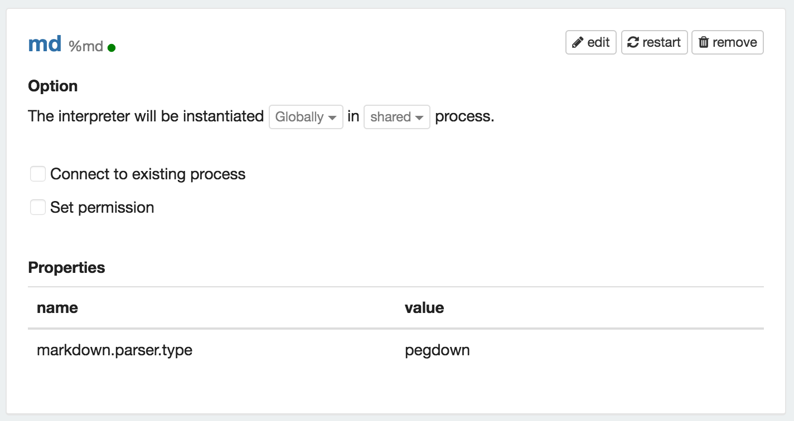
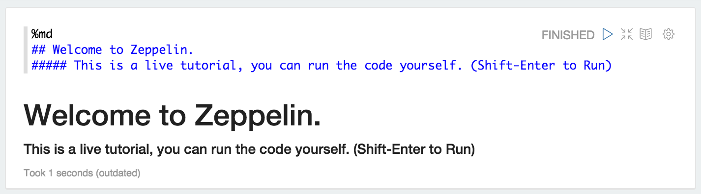
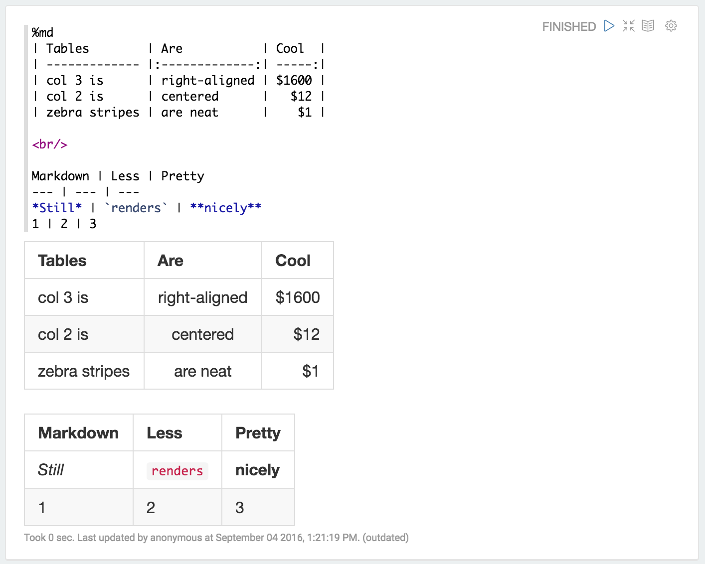
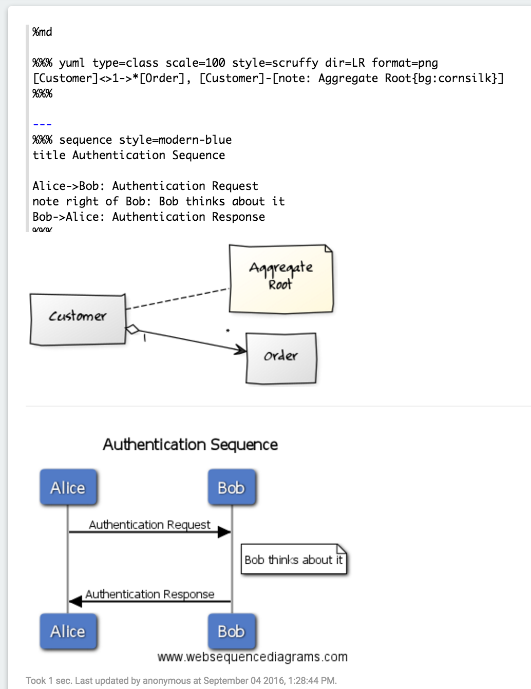

Markdown Interpreter for Apache Zeppelin
Overview
Markdown is a plain text formatting syntax designed so that it can be converted to HTML. Apache Zeppelin uses pegdown and markdown4j as markdown parsers.
In Zeppelin notebook, you can use %md in the beginning of a paragraph to invoke the Markdown interpreter and generate static html from Markdown plain text.
In Zeppelin, Markdown interpreter is enabled by default and uses the pegdown parser.

Example
The following example demonstrates the basic usage of Markdown in a Zeppelin notebook.

Mathematical expression
Markdown interpreter leverages %html display system internally. That means you can mix mathematical expressions with markdown syntax. For more information, please see Mathematical Expression section.
Configuration
| Name | Default Value | Description |
|---|---|---|
| markdown.parser.type | pegdown | Markdown Parser Type. Available values: pegdown, markdown4j. |
Pegdown Parser
pegdown parser provides github flavored markdown.

pegdown parser provides YUML and Websequence plugins also.

Markdown4j Parser
Since pegdown parser is more accurate and provides much more markdown syntax
markdown4j option might be removed later. But keep this parser for the backward compatibility.